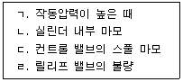
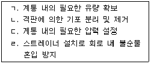
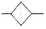
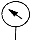
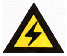

굴삭기운전기능사 (2007-09-16 기출문제)
1. 디젤기관의 윤활유 압력이 낮은 원인이 아닌 것은?
- 점도지수가 높은 오일을 사용하였다.
- 윤활유의 양이 부족하다.
- 오일펌프가 과대 마모되었다.
- 윤활유 압력 릴리프밸브가 열린 채 고착되었다.
(정답률: 70%)

2. 공기만을 실린더 내로 흡입하여 고압축비로 압축한 다음 압축열에 연료를 분사하는 작동원리의 디젤기관은?
- 압축착화 기관
- 전기점화 기관
- 외연기관
- 제트기관
(정답률: 89%)
3. 디젤기관에서 연료장치 공기빼기 순서가 바른 것은?
- 공급펌프→연료여과기→분사펌프
- 공급펌프→분사펌프→연료여과기
- 연료여과기→공급펌프→분사펌프
- 연료여과기→분사펌프→공급펌프
(정답률: 66%)
4. 디젤기관에서 시동이 되지 않는 원인과 가장 거리가 먼 것은?
- 연료가 부족하다.
- 기관의 압축압력이 높다.
- 연료 공급펌프가 불량이다.
- 연료계통에 공기가 혼입되어 있다.
(정답률: 82%)
5. 기관이 작동 중 라디에이터 캡 쪽으로 물이 상승하면서 연소가스가 누출될 때의 원인에 해당되는 것은?
- 실린더 헤드의 균열이 생겼다.
- 분사노즐의 동 와셔가 불량하다.
- 물펌프에 누설이 생겼다.
- 라디에이터 캡이 불량하다.
(정답률: 60%)
6. 건설기계 장비 작업시 계기판에서 오일 경고등이 점등되었을 때 우선 조치사항으로 가장 적절한 조치는?
- 엔진을 분해한다.
- 즉시 시동을 끄고 오일계통을 점검한다.
- 엔진오일을 교환하고 운전한다.
- 냉각수를 보충하고 운전한다.
(정답률: 89%)
7. 다음 중 연소시 발생하는 질소산화물(Nox)의 발생원인과 가장 밀접한 관계가 있는 것은?
- 높은 연소온도
- 가속불량
- 흡입공기 부족
- 소연 경계층
(정답률: 63%)
8. 기관의 냉각장치에 해당되지 않는 부품은?
- 수온조절기
- 릴리프밸브
- 방열기
- 팬 및 벨트
(정답률: 68%)
9. 디젤기관을 예방정비 시 고압파이프 연결부에서 연료가 샐 때 조임 공구로 가장 적합한 것은?
- 복스렌치
- 오픈렌치
- 파이프렌치
- 옵셋렌치
(정답률: 50%)
10. 디젤기관 장치 중에서 터보차저의 기능으로 맞는 것은?
- 실린더 내에 공기를 압축 공급하는 장치이다.
- 냉각수 유량을 조절하는 장치이다.
- 기관 회전수를 조절하는 장치이다.
- 윤활유 온도를 조절하는 장치이다.
(정답률: 65%)
11. 기관에서 실화(miss fire)가 일어났을 때 현상으로 맞는 것은?
- 엔진의 출력이 증가한다.
- 연료소비가 적다.
- 엔진이 과냉한다.
- 엔진회전이 불량하다.
(정답률: 74%)
12. 직접분사식 엔진의 장점 중 틀린 것은?
- 구조가 간단하므로 열효율이 높다.
- 연료의 분사압력이 낮다.
- 실린더 헤드의 구조가 간단하다.
- 냉각에 의한 열 손실이 적다.
(정답률: 60%)
13. 축전지가 완전충전이 잘 되지 않는 원인이다. 적절하지 않는 것은?
- 전기장치 합선
- 배터리 어스선 접속 이완
- 본선(B+) 연결부 접속 이완
- 발전기 브러시 스프링 장력 과다
(정답률: 68%)
14. 축전지를 교환 및 장착할 때 연결순서로 맞는 것은?
- (+)나 (-)선 중 편리한 것부터 연결하면 된다.
- 축전지의 (-)선을 먼저 부착하고, (+)선을 나중에 부착한다.
- 축전지의 (+), (-)선을 동시에 부착한다.
- 축전지의 (+)선을 먼저 부착하고, (-)선을 나중에 부착한다.
(정답률: 75%)
15. 전조등의 필라멘트가 끊어진 경우 렌즈나 반사경에 이상이 없어도 전조등 전부를 교환하여야 하는 형식은?
- 전구형
- 세미 실드형
- 실드형
- 분리형
(정답률: 51%)
16. 기동전동기의 회전이 느린 원인이 아닌 것은?
- 배터리 단자의 접속이 불량하다.
- 기온이 너무 높다.
- 배터리 전압이 낮다.
- 계자코일이 단락되었다.
(정답률: 77%)
17. 전압이 24V, 저항이 2Ω일 때 전류는 얼마인가?
- 24A
- 3A
- 6A
- 12A
(정답률: 86%)
18. 다음 중 충전장치의 발전기는 어떤 축에 의하여 구동되는가?
- 크랭크축
- 캠축
- 추진축
- 변속기 입력축
(정답률: 60%)
19. 동력전달 장치에서 두 축 간의 충격완화와 각도변화를 융통성 있게 동력 전달하는 기구는?
- 슬립이음(slip joint)
- 유니버설 조인트(universal joint)
- 파워 시프트(power shift)
- 크로스 멤버(cross member)
(정답률: 63%)
20. 기계식 변속기가 장착된 건설기계에서 클러치 스프링의 장력이 약하면 어떤 현상이 발생되는가?
- 주행속도가 빨라진다.
- 기관의 회전속도가 빨라진다.
- 기관이 정지한다.
- 클러치가 미끄러진다.
(정답률: 84%)
21. 다음 중 지게차 운전작업 관련사항으로 틀린 것은?
- 운전시 급정지, 급선회를 하지 않는다.
- 화물을 적재 후 포크를 될 수 있는 한 높이 들고 운행한다.
- 화물 운반시 포크의 높이는 지면으로부터 20cm~30cm를 유지한다.
- 포크를 상승시에는 액셀레이터를 밟으면서 상승시킨다.
(정답률: 79%)
22. 무한궤도식 건설기계의 하부 추진체와 트랙의 점검항목 및 조치사항을 열거한 것 중 틀린 것은?
- 구동 스프로킷의 마멸한계를 초과하면 교환한다.
- 트랙의 장력을 규정 값으로 조정한다.
- 리코일 스프링의 손상 등 상.하부 롤러 균열 및 마멸 등이 있으면 교환한다.
- 각부 롤러의 이상상태 및 리닝 장치의 기능을 점검한다.
(정답률: 36%)
23. 굴삭기 장비로 작업시 작업 안전사항으로 틀린 것은?
- 경사지 작업시 측면절삭을 행하는 것이 좋다.
- 한쪽 트랙을 들 때에는 암과 분 사이의 각도는 90~110도 범위로 해서 들어주는 것이 좋다.
- 타이어식 굴삭기로 작업시 안전을 위하여 아웃트리거를 받치고 작업하였다.
- 기중 작업은 가능한 피하는 것이 좋다.
(정답률: 58%)
24. 기중기의 작업용도와 가장 거리가 먼 것은?
- 기중 작업
- 굴토 작 업
- 지균 작업
- 항타 작업
(정답률: 47%)
25. 타이어식 건설기계 장비에서 조향핸들의 조작을 가볍고 원활하게 하는 방법과 가장 거리가 먼 것은?
- 동력조향을 사용한다.
- 바퀴의 정렬을 정확히 한다.
- 타이어 공기압을 적정압으로 한다.
- 종감속 장치를 사용한다.
(정답률: 66%)
26. 무한궤도식 로더로 진흙탕이나 수중 작업을 할 때 관련된 사항으로 틀린 것은?
- 작업 전에 기어실과 클러치실 등의 드레인 플러그의 조임 상태를 확인한다.
- 습지용 슈를 사용했으면 주행장치의 베어링에 주유하지 않는다.
- 작업 후에는 세차를 하고 각 베어링에 주유를 해야 된다.
- 작업 후 기어실과 클러치실의 드레인 플러그를 열어 물의 침입을 확인한다.
(정답률: 70%)
27. 차마 서로 간의 통행 우선순위로 바르게 연결된 것은?
- 긴급자동차→ 긴급자동차 외의 자동차→ 자동차 및 원동기장치자전거 외의 차마→ 원동기장치자전거
- 긴급자동차 외의 자동차→ 긴급자동차→ 자동차 및 원동기장치자전거 외의 차마→ 원동기장치자전거
- 긴급자동차 외의 자동차→ 긴급자동차→ 원동기장치자전거→ 자동차 및 원동기장치자전거 외의 차마
- 긴급자동차→ 긴급자동차 외의 자동차→ 원동기장치자전거→ 자동차 및 원동기장치자전거 외의 차마
(정답률: 39%)
28. 건설기계관리법상 구조변경범위 대상으로 틀린 것은?
- 건설기계의 기종 변경
- 원동기의 형식변경
- 주행장치의 형식변경
- 조종장치의 형식변경
(정답률: 58%)
29. 건설기계라 함은 건설공사에 사용할 수 있는 기계로서 무슨 영으로 정해져 있는가?
- 산업자원부령
- 대통령령
- 행정자치부령
- 시.도지사령
(정답률: 50%)
30. 도로교통법상 도로에 해당되지 않는 것은?
- 해상 도로법에 의한 항로
- 차마의 통행을 위한 도로
- 유료도로법에 의한 유료도로
- 도로법에 의한 도로
(정답률: 79%)
31. 정기검사를 받지 않아도 되는 건설기계에 해당되는 것은?
- 덤프트럭
- 콘크리트믹서트럭
- 트럭적재식 콘크리트펌프
- 콘크리트살포기
(정답률: 42%)
32. 도로교통법상 3색 등화로 표시되는 신호등의 신호 순서로 맞는 것은?
- 녹색(적색 및 녹색 화살표)등화, 황색등화, 적색 등화의 순서이다.
- 적색(적색 및 녹색 화살표)등화, 황색등화, 녹색 등화의 순서이다.
- 녹색(적색 및 녹색 화살표)등화, 적색등화, 황색 등화의 순서이다.
- 적색등화, 황색등화, 녹색(적색 및 녹색 화살표) 등화의 순서이다.
(정답률: 68%)
33. 건설기계관리법상 제작자로부터 건설기계를 구입한 자가 무상으로 사후관리를 받을 수 있는 법정기간은? (단, 주행거리 및 사용시간은 사후관리 기간 내에 있음)
- 6월
- 12월
- 18월
- 24월
(정답률: 62%)
34. 제1종 보통면허로 운전할 수 없는 것은?
- 승차정원 15인승의 승합자동차
- 11톤급의 화물자동차
- 승차정원 12인 이하를 제외한 긴급자동차
- 원동기장치 자전거
(정답률: 43%)
35. 교통사고시 사상자가 발생하였을 때 운전자가 즉시 취하여야 할 조치사항 중 가장 옳은 것은?
- 증인확보 - 정차 - 사상자 구호
- 즉시 정차 - 신고 - 위해 방지
- 즉시 정차 - 위해 방지 - 신고
- 즉시 정차 - 사상자 구호 - 신고
(정답률: 83%)
36. 건설기계 운전면허의 효력정지 사유가 발생한 경우 관련법상 효력 정지기간으로 맞는 것은?
- 1년 이내
- 6월 이내
- 5년 이내
- 3년 이내
(정답률: 53%)
37. 유압모터의 회전속도가 규정 속도보다 느릴 경우의 원인에 해당하지 않는 것은?
- 유압펌프의 오일 토출량 과다
- 유압유의 유입량 부족
- 각 습동부의 마모 또는 파손
- 오일의 내부 누설
(정답률: 66%)
38. 유압장치의 일상점검 개소가 아닌 것은?
- 오일의 양 점검
- 작동상태 점검
- 오일의 누유 여부 점검
- 탱크 내부 점검
(정답률: 82%)
39. 유압유의 성질로 틀린 것은?
- 비중이 적당할 것
- 인화점이 낮을 것
- 점성과 온도와의 관계가 양호할 것
- 강인한 유막을 형성할 것
(정답률: 59%)
40. 기어펌프의 특징이 아닌 것은?
- 외접식과 내접식이 있다.
- 베인펌프에 비해 소음이 비교적 크다.
- 펌프의 발생압력이 가장 높다.
- 구조가 간단하고 흡입성이 우수하다.
(정답률: 44%)
41. 유압장치에서 오일의 역류를 방지하기 위한 밸브는?
- 변환밸브
- 압력조절밸브
- 체크밸브
- 흡기밸브
(정답률: 68%)
42. 다음 보기 중 유압실린더에서 발생되는 실린더 자연하강현상(cylinder drift)의 발생원인으로 모두 맞는 것은?

- ㄱ, ㄴ, ㄷ
- ㄱ, ㄴ, ㄹ
- ㄴ, ㄷ, ㄹ
- ㄱ, ㄷ, ㄹ
(정답률: 58%)
43. 다음 보기 중 유압 오일탱크의 기능으로 모두 맞는 것은?

- ㄱ, ㄴ, ㄷ
- ㄱ, ㄴ, ㄹ
- ㄴ, ㄷ, ㄹ
- ㄱ, ㄷ, ㄹ
(정답률: 50%)
44. 유압회로의 최고압력을 제한하는 밸브로서 회로의 압력을 일정하게 유지시키는 밸브는?
- 첵밸브
- 감압밸브
- 릴리프밸브
- 카운터밸런스밸브
(정답률: 59%)
45. 유압유가 과열되는 원인과 가장 거리가 먼 것은?
- 릴리프 밸브(Relief valve)가 닫힌 상태로 고장일 때
- 오일 냉각기의 냉각핀이 오손되었을 때
- 유압유가 부족할 때
- 유압유량이 규정보다 많을 때
(정답률: 68%)
46. 유압 공기압 도면기호에서 유압(동력)원의 기호 표시는?


(정답률: 50%)
47. 수공구 사용시 안전사고 원인에 해당되지 않는 것은?
- 힘에 맞지 않는 공구를 사용하였다.
- 수공구의 성능을 알고 선택하였다.
- 사용방법이 미숙하였다.
- 사용공구의 점검 및 정비를 소홀히 하였다.
(정답률: 87%)
48. 산업공장에서 재해의 발생을 적게 하기 위한 방법 중 틀린 것은?
- 폐기물은 정해진 위치에 모아둔다.
- 공구는 소정의 장소에 보관한다.
- 소화기 근처에 물건을 적재한다.
- 통로나 창문 등에 물건을 세워 놓아서는 안 된다.
(정답률: 88%)
49. 안전관리상 감전의 위험이 있는 곳의 전기를 차단하여 수리점검을 할 때의 조치와 관계가 없는 것은?
- 스위치에 통전 장치를 한다.
- 기타 위험에 대한 방지장치를 한다.
- 스위치에 안전장치를 한다.
- 통전 금지기간에 관한 사항이 있을 때 필요한 곳에 게시한다.
(정답률: 51%)
50. 산업안전보건표지에서 그림이 표시하는 것으로 맞는 것은?

- 독극물 경고
- 폭발물 경고
- 고압전기 경고
- 낙하물 경고
(정답률: 91%)
51. 동력전달 장치 중 재해가 가장 많이 일어날 수 있는 것은?
- 기어
- 차축
- 벨트
- 커플링
(정답률: 74%)
52. 크레인으로 인양시 물체의 중심을 측정하여 인양하여야 한다. 다음 중 잘못된 것은?
- 형상이 복잡한 물체의 무게 중심을 확인한다.
- 인양 물체를 서서히 올려 지상 약 30cm지점에서 정지하여 확인한다.
- 인양 물체의 중심이 높으면 물체가 기울 수 있다.
- 와이어로프나 매달기용 체인이 벗겨질 우려가 있으면 되도록 높이 인양한다.
(정답률: 85%)
53. 오픈엔드렌치 사용방법으로 틀린 것은?
- 입(jaw)이 변형된 것은 사용하지 않는다.
- 볼트는 미끌리지 않도록 단단히 끼워 밀 때 힘이 작용되도록 한다.
- 연료파이프 피팅을 풀고 조일 때 사용한다.
- 자루에 파이프를 끼워 사용하지 않는다.
(정답률: 53%)
54. 작업장에서 지켜야 할 준수사항이 아닌 것은?
- 작업장에서는 급히 뛰지 말 것
- 불필요한 행동을 삼가 할 것
- 공구를 전달할 경우 시간절약을 위해 가볍게 던질 것
- 대기 중인 차량엔 고임목을 고여둘 것
(정답률: 87%)
55. 작업장에서 용접작업의 유해광선으로 눈에 이상이 생겼을 때 적절한 조치로 맞는 것은?
- 손으로 비빈 후 과산화수소로 치료한다.
- 냉수로 씻어낸 냉수포를 얹거나 병원에서 치료한다.
- 알코올로 씻는다.
- 뜨거운 물로 씻는다.
(정답률: 85%)
56. 유류화재시 소화용으로 가장 거리가 먼 것은?
- 물
- 소화기
- 모래
- 흙
(정답률: 84%)
57. 배관 내부의 압력이 중압이 도시가스 배관이 지하에 매설되어 있다. 배관 표면의 색상은?
- 적색
- 황색
- 회색
- 녹색
(정답률: 53%)
58. 지하 전력케이블이 지상 전주로 입상 또는 지상 전력선이 지하 전력케이블로 입하하는 전주 주변에서의 건설기계 장비로 작업할 때 가장 올바른 설명은?
- 지하 전력케이블이 지상전주로 입상하는 전주는 전력선이 케이블로 되어있어 건설기계가 접촉해도 무관하다.
- 지상 전주의 전력선이 지하 전력케이블로 입하하는 전주는 전력선이 케이블로 되어있어 건설기계가 접촉해도 무관하다.
- 전력케이블이 입상 또는 입하하는 전주 상에는 기기가 설치되어 있어 절대로 접촉 또는 근접해서는 안 된다.
- 전력케이블이 입상 또는 입하하는 전주의 전력선은 모두 케이블로 되어있어 접촉되지 않도록 주의하면 된다.
(정답률: 75%)
59. 지하구조물이 설치된 지역에 도시가스가 공급되는 곳에서 굴삭기를 이용하여 굴착공사 중 지면에서 0.3m 깊이에서 물체가 발견되었다. 예측할 수 있는 것으로 맞는 것은?
- 도시가스 입상관
- 도시가스배관을 보호하는 보호관
- 가스차단 장치
- 수취기
(정답률: 80%)
60. 발전소 상호간, 변전소 상호간 또는 발전소와 변전소간의 설치된 전력 선로를 무엇이라고 하는가?
- 배전선로
- 송전선로
- 발전선로
- 가공선로
(정답률: 62%)